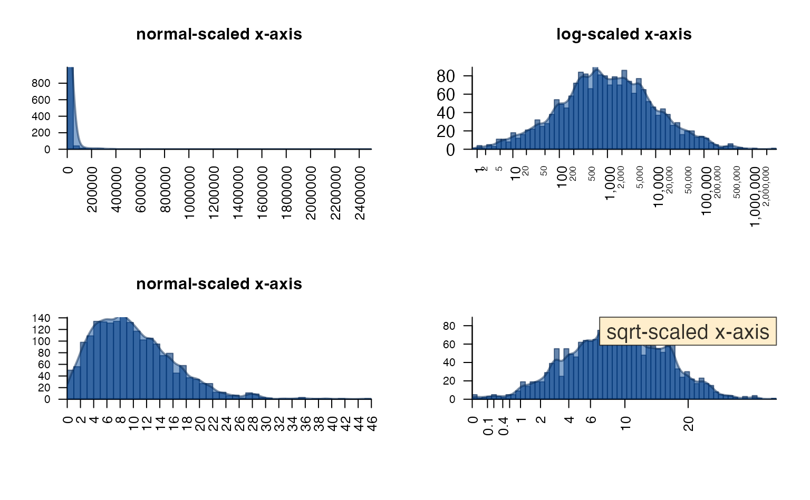

Jamba Overview
Jamba is intended to contain JAM base functions, to be re-used during analysis, and by other R packages. Functions are broadly divided into categories.
Efficient alphanumeric sort
The mixedSort(), mixedSortDF() functions
are designed for “genes”, “chromosomes”, and “versions”, with
alphanumeric sorting. For example: * gene "ACTA2" before
"ACTA10" * micro-RNA "hsa-miR-21" before
"hsa-miR-100" * chromosome "chr2" before
"chr10"
It is fast enough for most large dataset operations, not unreasonably
slower than base::sort(), and much faster than alternative
approaches.
-
mixedSort()- alphanumeric sort. -
mixedSortDF()- sortdata.frame(tibble,matrix,DataFrame, etc.) -
mixedSorts()- sortlistof vectors, vectorized for speed boost.
Example:
#> miRNA sort_rank mixedSort_rank
#> 2 ABCA2 2 1
#> 1 ABCA12 1 2
#> 3 miR-1 3 3
#> 6 miR-1a 6 4
#> 7 miR-1b 7 5
#> 8 miR-2 8 6
#> 4 miR-12 4 7
#> 9 miR-22 9 8
#> 5 miR-122 5 9Plot functions
plotSmoothScatter()
A common problem when visualizing extremely large datasets is how to display thousands of datapoints while indicating the amount of overlap of those points. The “overplotting” problem.
The R graphics::smoothScatter() function provides an
adequate drop-in replacement for most uses of plot(), and
plotSmoothScatter() applies some enhanced defaults.
- Bandwidth is increased to provide more visual detail.
- Bins are increased to render higher resolution.
- Output is rasterized to improve speed and visual quality.
- Color ramp uses two-scale colors to distinguish low/high density.
- It calculates 2D density with independent x-/y-axis ranges, without affecting the 2D density estimate. It means the density is spherical and not oblong, when x-/y-axis range differ substantially.
The customizations use “bin” to define the bin size, and “bw” to define the 2D kernel density bandwidth. The bandwidth defines the detail of the “carpet”, the point landscape if you will. The bin size defines how many pixels are used to render this carpet. Typically the bin size is related to the graphics device resolution. However, bandwidth should be related to relative detail in the data.
Adjustments are easiest with arguments: * binpi - bins
per inch * bwpi bandwidth per inch
Running plotSmoothScatter() with
doTest=TRUE produces some visual comparison with default
smoothScatter().
plotSmoothScatter(doTest=TRUE);
imageByColors()
The imageByColors() function is intended to take a
matrix or data.frame that already contains colors in each cell. It
optionally displays cell labels when supplied.
Cell labels are grouped to display one unique label per repeated
label, using the function breaksByVector() to group
labels.
This function is particularly useful to simplify labels in a large table of repeated values, for example in experiment design.
Here, we define a simple data.frame composed of colors, then use the data.frame to label itself:
a1 <- c("red","blue")[c(1,1,2)];
b1 <- c("yellow","orange")[c(1,2,2)];
c1 <- c("purple","orange")[c(1,2,2)];
d1 <- c("purple","green")[c(1,2,2)];
df1 <- data.frame(a=a1, b=b1, c=c1, d=d1);
imageByColors(df1, cellnote=df1);
Labels can be independently rotated and resized, an arbitrary example is shown below:
imageByColors(df1,
cellnote=df1,
useRaster=TRUE,
#adjBy="column",
cexCellnote=list(c(1.5,1.5,1),
c(1,1.5),
c(1.6,1.2),
c(1.6,1.5)),
srtCellnote=list(c(90,0,0),
c(0,45),
c(0,0,0),
c(0,90,0)));
Axis label functions
There are several useful axis labeling functions.
For log-transformed data, minorLogTicksAxis() is a
flexible function to help deal with different transforms. It enables
“offset”, commonly used with log2(1 + x), but now enables
using any offset, e.g. log2(0.5 + x). Axis labels use
integer values, accounting for the offset.
The logBase can be customized, can be properly labeled
when showing log10(P-value). When showing log2 fold
changes, it accepts negative values and flips the sign accordingly.
# example showing volcano plot features
set.seed(123);
n <- 1000;
vdf <- data.frame(lfc=rnorm(n) * 2)
vdf$`-log10 (padj)` <- abs(vdf$lfc) * abs(rnorm(n))
plotSmoothScatter(vdf, xaxt="n", yaxt="n", xlab="Fold change",
main="Volcano plot\ndisplayBase=2")
logFoldAxis(1)
pvalueAxis(2)
plotPolygonDensity()
plotPolygonDensity() is a light wrapper around two
functions: hist() and density(). However, it
makes two other options convenient:
- Transform the x-axis with either
log10(1 + x)orsqrt(), usexScale=c("default", "log10", "sqrt"). - Display multiple panels for each column of a numeric matrix.
- See also:
plotRidges()- a ggridges alternative.
withr::with_par(list("mar"=c(6, 4, 4, 2), "mfrow"=c(2, 2)), {
withr::local_options(list("scipen"=7));
set.seed(123);
plotPolygonDensity(10^(3+rnorm(2000)),
breaks=50,
cex.axis=1,
main="normal-scaled x-axis");
plotPolygonDensity(10^(3+rnorm(2000)),
log="x",
breaks=50,
main="log-scaled x-axis");
plotPolygonDensity((3+rnorm(2000))^2,
cex.axis=1,
breaks=50,
main="normal-scaled x-axis");
plotPolygonDensity((3+rnorm(2000))^2,
cex.axis=1,
xScale="sqrt",
breaks=50,
main="");
drawLabels(preset="topright",
txt="sqrt-scaled x-axis",
labelCex=1.5)
})
drawLabels()
drawLabels() is aimed at base R graphics, and provides a
quick way to add a label to a plot. The argument preset is
used to place the label relative to the sides and corners of the
plot.
Shown below text_fn=jamba::shadowText will enable shadow
text output.
par("mfrow"=c(1,1))
plotPolygonDensity((3+rnorm(2000))^2,
cex.axis=1,
xScale="sqrt",
breaks=50,
main="");
drawLabels(preset="bottom",
txt="sqrt-scaled x-axis",
text_fn=jamba::shadowText,
labelCex=1.5)
Colors
For me, color plays a big role in my daily work, both in how I use R, and the figures and visualizations I produce during data analysis.
Another Jam package colorjam focuses on defining
categorical colors in an extensible manner.
getColorRamp()
-
getColorRamp()is a workhorse of several other functions and workflows.- It makes convenient the job of obtaining a color ramp (aka a color
palette, or color gradient). It interfaces with
RColorBrewerandviridisLitefor color palette names, and allows some useful extensions. - It accepts suffix
"_r"to reverse color order,RColorBrewerpalette"RdBu"is reversed with"RdBu_r". Red should be the high color in a heatmap - “heat”, so “RdBu_r” is recommended.
- It makes convenient the job of obtaining a color ramp (aka a color
palette, or color gradient). It interfaces with
printDebug()
printDebug()is present in every Jam function, used whenverbose=TRUEto follow the processing steps. Of course it uses color.printDebugHtml()is used for RMarkdown output, use the chunk optionresults='asis'so the HTML is displayed properly.printDebugI()is an alternative that “inverts” the color, using the color as background, with contrasting text color on top.When a vector is provided, its values are delimited with
sep, and each value is “dithered” with the same color with lighter/darker pattern for visual distinction.Each element is assigned a color recycled from
fgText, and can be customized.
printDebugHtml("printDebugHtml(): ",
"Output is colorized: ",
head(LETTERS, 8))(14:38:41) 22Mar2025: printDebugHtml(): Output is colorized: A,B,C,D,E,F,G,H
withr::with_options(list(jam.htmlOut=TRUE, jam.comment=FALSE), {
printDebugHtml(c("printDebug() using withr::with_options(): "),
c("Output should be colorized: "),
head(LETTERS, 8));
})(14:38:42) 22Mar2025: printDebug() using withr::with_options():
Output should be colorized:
A,B,C,D,E,F,G,H
showColors()
-
showColors()displays a color ramp, orlistof color ramps, or afunctionas defined bycirclize::colorRamp2(). (Amazing function by the way.)
Other color functions
warpRamp()is used with argumentlensin other functions, and can warp the colors for more contrast. It even handles divergent colors, keeping the middle color intact.rainbow2()is a very simple drop-in replacement forrainbow(), which adds alternating contrast to adjacent colors. A better option iscolorjam::rainbowJam()butrainbow2()is a simple option until colorjam is on CRAN.
showColors(list(
Reds=getColorRamp("Reds"),
RdBu=getColorRamp("RdBu"),
RdBu_r=getColorRamp("RdBu_r"),
`RdBu_r, lens=5`=warpRamp(getColorRamp("RdBu_r"), lens=5),
`RdBu_r, lens=-5`=warpRamp(getColorRamp("RdBu_r"), lens=-5),
`rainbow2(15)`=rainbow2(15)
));
Console functions
setPrompt()
setPrompt() is a convenience function for R console and
RStudio work, it creates a colorized R prompt with useful info: *
project name * R version * Process ID (PID). The PID is useful in case
ahem the R session runs wild.
Ultimately, it helps answer the question “What am I working on?”
setPrompt("jambaVignette");
# {jambaVignette}-R-3.6.0_10789>
jargs()
Jam args().
- Aligns arguments, one per row
- Allows pattern search
- Optionally sorts by argument name
- Colorized in the R console
# all args
jargs(plotSmoothScatter)
#> x = ,
#> y = NULL,
#> bwpi = 50,
#> binpi = 50,
#> bandwidthN = NULL,
#> nbin = NULL,
#> expand = c(0.04, 0.04),
#> transFactor = 0.25,
#> transformation = function( x ) x^transFactor,
#> xlim = NULL,
#> ylim = NULL,
#> xlab = NULL,
#> ylab = NULL,
#> nrpoints = 0,
#> colramp = c("white", "lightblue", "blue", "orange", "orangered2"),
#> col = "black",
#> doTest = FALSE,
#> fillBackground = TRUE,
#> naAction = c("remove", "floor0", "floor1"),
#> xaxt = "s",
#> yaxt = "s",
#> add = FALSE,
#> asp = NULL,
#> applyRangeCeiling = TRUE,
#> useRaster = TRUE,
#> verbose = FALSE,
#> ... =
# args with "y" in the name
jargs(plotSmoothScatter, "^y")
#> y = NULL,
#> ylim = NULL,
#> ylab = NULL,
#> yaxt = "s"
sdim() and ssdim()
These functions apply dim() to a list, or list of lists.
They recognize other S4 object types, and special types like
igraph and Bioconductor objects.
It returns either data.frame of dimensions, or
list of data.frame, which can be easily parsed
and reviewed.
L <- list(LETTERS=LETTERS,
letters=letters,
lettersDF=data.frame(LETTERS, letters));
sdim(L);
#> rows cols class
#> LETTERS 26 character
#> letters 26 character
#> lettersDF 26 2 data.frame
L2 <- list(List1=L,
List2=L);
sdim(L2);
#> rows class
#> List1 3 list
#> List2 3 list
ssdim(L2)
#> $List1
#> rows cols class
#> LETTERS 26 character
#> letters 26 character
#> lettersDF 26 2 data.frame
#>
#> $List2
#> rows cols class
#> LETTERS 26 character
#> letters 26 character
#> lettersDF 26 2 data.frameExcel functions
writeOpenxlsx()
writeOpenxlsx() is a convenient wrapper for the amazing
openxlsx, to automate numeric formatting, column color,
font size, text alignment. When saving to Excel, you want all the
details to look pretty, and to be usable without having to configure it
later.
It has presets for certain data types, with default numeric formatting, and conditional color-coding by default: * P-values * fold change, log fold change * numeric values * integer values * highlight columns (bold font)
It configures some defaults: * column headers have filtering enabled * striped column and header colors * freeze pane and row to keep the header visible * column widths * word wrap, or not * header row height * categorical colors when defined
Some nice extras: * save one or more worksheets to the same file * optionally include rownames
readOpenxlsx()
readOpenxlsx() is convenient for reading all worksheets
in an Excel file, and returns data without mangling the column headers.
It returns a list of data.frame objects.
Convenience
vigrep(), provigrep(),
igrep(), igrepHas()
Quick custom base::grep() for case-insensitive, or
value-returning work.
-
vigrep()- extends grep to usevalue=TRUEandignore.case=TRUE -
igrep()- extends grep to useignore.case=TRUE, case-insensitive matching. -
provigrep()- progressive pattern matching, returning entries in the order they match a vector of patterns. Super useful. -
igrepHas()- extendsigrep()to returnTRUEorFALSE, convenient forif()statements.
gsubOrdered()
gsubOrdered() is an extension to gsub()
that preserves factor order of the input data, creating new ordered
factor levels using the same gsub() replacement. Much more
useful than you might think!
pasteByRow() and pasteByRowOrdered()
pasteByRow() is a lightweight by efficient method for
combining multiple columns into one character string. There are other
approaches, however this function is among the fastest, especially 10000
rows or more, and allows “ignoring” empty cells in the output, and
trimming leading/trailing blanks.
pasteByRowOrdered() is an extension of
pasteByRow() that also maintains factor level order of each
column. Again, super useful to make labels that honor factor level
order, for example with experimental designs.
a1 <- factor(c("mutant", "control")[c(1,1,2)],
levels=c("control", "mutant"));
b1 <- factor(c("vehicle", "treated")[c(2,1,1)],
levels=c("vehicle", "treated"));
d1 <- c("purple","green")[c(1,2,2)];
df2 <- data.frame(a=a1, b=b1, d=d1);
df2;
#> a b d
#> 1 mutant treated purple
#> 2 mutant vehicle green
#> 3 control vehicle green
pasteByRow(df2);
#> 1 2 3
#> "mutant_treated_purple" "mutant_vehicle_green" "control_vehicle_green"
pasteByRowOrdered(df2);
#> 1 2 3
#> mutant_treated_purple mutant_vehicle_green control_vehicle_green
#> Levels: control_vehicle_green mutant_vehicle_green mutant_treated_purple
df3 <- data.frame(df2,
pasteByRowOrdered=pasteByRowOrdered(df2));
mixedSortDF(df3, byCols="pasteByRowOrdered")
#> a b d pasteByRowOrdered
#> 3 control vehicle green control_vehicle_green
#> 2 mutant vehicle green mutant_vehicle_green
#> 1 mutant treated purple mutant_treated_purple
makeNames(), nameVector(),
nameVectorN()
Create unique names with controlled versioning options. The
base::make.unique() is great, but sometimes you need to
control the output.
makeNames()returns unique names, by default for duplicated values it uses the suffix style_v1,_v2,_v3. The suffix can be controlled, whether to add a suffix to singlet entries, what number to start with, etc.nameVector()is similar tosetNames()except that it secretly runsmakeNames(), and when only provided with a vector, the vector is used to define names. Named vectors are convenient withlapply()type list functions, because names are used in the returnedlist.
nameVectorN() creates a named vector of the vector
names, useful with lapply() when you need to know the
element name in the function call.
x <- rep(head(letters, 4), c(2,4,1,5));
x;
#> [1] "a" "a" "b" "b" "b" "b" "c" "d" "d" "d" "d" "d"
makeNames(x);
#> [1] "a_v1" "a_v2" "b_v1" "b_v2" "b_v3" "b_v4" "c" "d_v1" "d_v2" "d_v3"
#> [11] "d_v4" "d_v5"
nameVector(x);
#> a_v1 a_v2 b_v1 b_v2 b_v3 b_v4 c d_v1 d_v2 d_v3 d_v4 d_v5
#> "a" "a" "b" "b" "b" "b" "c" "d" "d" "d" "d" "d"
y <- nameVector(x);
nameVectorN(y);
#> a_v1 a_v2 b_v1 b_v2 b_v3 b_v4 c d_v1 d_v2 d_v3 d_v4
#> "a_v1" "a_v2" "b_v1" "b_v2" "b_v3" "b_v4" "c" "d_v1" "d_v2" "d_v3" "d_v4"
#> d_v5
#> "d_v5"
lapply(nameVectorN(head(y)), function(i){
i
})
#> $a_v1
#> [1] "a_v1"
#>
#> $a_v2
#> [1] "a_v2"
#>
#> $b_v1
#> [1] "b_v1"
#>
#> $b_v2
#> [1] "b_v2"
#>
#> $b_v3
#> [1] "b_v3"
#>
#> $b_v4
#> [1] "b_v4"
cPaste(), cPasteSU(),
cPasteU()
cPaste() “concatenate-paste”, takes a list
and combines each vectors using a delimiter. It is among the fastest
methods (at the time), partly by using
S4Vectors::unstrsplit() if available. (Kudos Herve
Pages!)
-
cPasteU()callsunique()for each vector (vectorized). -
cPasteS()appliesmixedSort()to each vector (vectorized). -
cPasteSU()spplies sort and unique.
These functions are very useful when operating on a list of gene
symbols. For example, a vector of 500,000 assay probe names may be
converted to a list of gene symbols, with some assay probe names
associated with multiple gene symbols. The function
cPasteSU() combines gene symbols with delimiter
",", after sorting and making values unique.
It is also useful with gene-pathway data, where biological pathways are associated with a long list of gene symbols.
set.seed(123);
x <- lapply(seq_len(6), function(i){
paste0("Gene",
sample(LETTERS,
sample(c(1,1,2,5,9), 1),
replace=TRUE));
});
cPaste(x);
#> [1] "GeneN,GeneC" "GeneR" "GeneE,GeneT" "GeneZ" "GeneE,GeneS"
#> [6] "GeneY,GeneY"
cPasteU(x);
#> [1] "GeneN,GeneC" "GeneR" "GeneE,GeneT" "GeneZ" "GeneE,GeneS"
#> [6] "GeneY"
cPasteSU(x);
#> [1] "GeneC,GeneN" "GeneR" "GeneE,GeneT" "GeneZ" "GeneE,GeneS"
#> [6] "GeneY"
data.frame(cPaste=cPaste(x),
cPasteU=cPasteU(x),
cPasteSU=cPasteSU(x))
#> cPaste cPasteU cPasteSU
#> 1 GeneN,GeneC GeneN,GeneC GeneC,GeneN
#> 2 GeneR GeneR GeneR
#> 3 GeneE,GeneT GeneE,GeneT GeneE,GeneT
#> 4 GeneZ GeneZ GeneZ
#> 5 GeneE,GeneS GeneE,GeneS GeneE,GeneS
#> 6 GeneY,GeneY GeneY GeneYRMarkdown Colored Tables
kable_coloring()
-
kable_coloring()- applies categorical colors tokable()output usingkableExtra::kable(). It also applies a contrasting text color.
expt_df <- data.frame(
Sample_ID="",
Treatment=rep(c("Vehicle", "Dex"), each=6),
Genotype=rep(c("Wildtype", "Knockout"), each=3),
Rep=paste0("rep", c(1:3)))
expt_df$Sample_ID <- pasteByRow(expt_df[, 2:4])
# define colors
colorSub <- c(Vehicle="palegoldenrod",
Dex="navy",
Wildtype="gold",
Knockout="firebrick",
nameVector(color2gradient("grey48", n=3, dex=10), rep("rep", 3), suffix=""),
nameVector(
color2gradient(n=3,
c("goldenrod1", "indianred3", "royalblue3", "darkorchid4")),
expt_df$Sample_ID))
if (requireNamespace("kableExtra", quietly=FALSE)) {
kbl <- kable_coloring(
expt_df,
caption="Experiment design table showing categorical color assignment.",
colorSub)
}